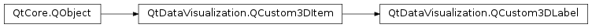

QtDataVisualization.QCustom3DLabel¶
Synopsis¶
Functions¶
- def
backgroundColor() - def
font() - def
isBackgroundEnabled() - def
isBorderEnabled() - def
isFacingCamera() - def
setBackgroundColor(color) - def
setBackgroundEnabled(enabled) - def
setBorderEnabled(enabled) - def
setFacingCamera(enabled) - def
setFont(font) - def
setText(text) - def
setTextColor(color) - def
text() - def
textColor()
Signals¶
- def
backgroundColorChanged(color) - def
backgroundEnabledChanged(enabled) - def
borderEnabledChanged(enabled) - def
facingCameraChanged(enabled) - def
fontChanged(font) - def
textChanged(text) - def
textColorChanged(color)
Detailed Description¶
-
class
PySide2.QtDataVisualization.QtDataVisualization.QCustom3DLabel([parent=nullptr])¶ -
class
PySide2.QtDataVisualization.QtDataVisualization.QCustom3DLabel(text, font, position, scaling, rotation[, parent=nullptr]) Parameters: - position –
PySide2.QtGui.QVector3D - rotation –
PySide2.QtGui.QQuaternion - font –
PySide2.QtGui.QFont - scaling –
PySide2.QtGui.QVector3D - text – unicode
- parent –
PySide2.QtCore.QObject
- position –
-
PySide2.QtDataVisualization.QtDataVisualization.QCustom3DLabel.backgroundColor()¶ Return type: PySide2.QtGui.QColor
-
PySide2.QtDataVisualization.QtDataVisualization.QCustom3DLabel.backgroundColorChanged(color)¶ Parameters: color – PySide2.QtGui.QColor
-
PySide2.QtDataVisualization.QtDataVisualization.QCustom3DLabel.backgroundEnabledChanged(enabled)¶ Parameters: enabled – PySide2.QtCore.bool
-
PySide2.QtDataVisualization.QtDataVisualization.QCustom3DLabel.borderEnabledChanged(enabled)¶ Parameters: enabled – PySide2.QtCore.bool
-
PySide2.QtDataVisualization.QtDataVisualization.QCustom3DLabel.facingCameraChanged(enabled)¶ Parameters: enabled – PySide2.QtCore.bool
-
PySide2.QtDataVisualization.QtDataVisualization.QCustom3DLabel.font()¶ Return type: PySide2.QtGui.QFont
-
PySide2.QtDataVisualization.QtDataVisualization.QCustom3DLabel.fontChanged(font)¶ Parameters: font – PySide2.QtGui.QFont
-
PySide2.QtDataVisualization.QtDataVisualization.QCustom3DLabel.isBackgroundEnabled()¶ Return type: PySide2.QtCore.bool
-
PySide2.QtDataVisualization.QtDataVisualization.QCustom3DLabel.isBorderEnabled()¶ Return type: PySide2.QtCore.bool
-
PySide2.QtDataVisualization.QtDataVisualization.QCustom3DLabel.isFacingCamera()¶ Return type: PySide2.QtCore.bool
-
PySide2.QtDataVisualization.QtDataVisualization.QCustom3DLabel.setBackgroundColor(color)¶ Parameters: color – PySide2.QtGui.QColor
-
PySide2.QtDataVisualization.QtDataVisualization.QCustom3DLabel.setBackgroundEnabled(enabled)¶ Parameters: enabled – PySide2.QtCore.bool
-
PySide2.QtDataVisualization.QtDataVisualization.QCustom3DLabel.setBorderEnabled(enabled)¶ Parameters: enabled – PySide2.QtCore.bool
-
PySide2.QtDataVisualization.QtDataVisualization.QCustom3DLabel.setFacingCamera(enabled)¶ Parameters: enabled – PySide2.QtCore.bool
-
PySide2.QtDataVisualization.QtDataVisualization.QCustom3DLabel.setFont(font)¶ Parameters: font – PySide2.QtGui.QFont
-
PySide2.QtDataVisualization.QtDataVisualization.QCustom3DLabel.setText(text)¶ Parameters: text – unicode
-
PySide2.QtDataVisualization.QtDataVisualization.QCustom3DLabel.setTextColor(color)¶ Parameters: color – PySide2.QtGui.QColor
-
PySide2.QtDataVisualization.QtDataVisualization.QCustom3DLabel.text()¶ Return type: unicode
-
PySide2.QtDataVisualization.QtDataVisualization.QCustom3DLabel.textChanged(text)¶ Parameters: text – unicode
-
PySide2.QtDataVisualization.QtDataVisualization.QCustom3DLabel.textColor()¶ Return type: PySide2.QtGui.QColor
-
PySide2.QtDataVisualization.QtDataVisualization.QCustom3DLabel.textColorChanged(color)¶ Parameters: color – PySide2.QtGui.QColor
© 2018 The Qt Company Ltd. Documentation contributions included herein are the copyrights of their respective owners. The documentation provided herein is licensed under the terms of the GNU Free Documentation License version 1.3 as published by the Free Software Foundation. Qt and respective logos are trademarks of The Qt Company Ltd. in Finland and/or other countries worldwide. All other trademarks are property of their respective owners.